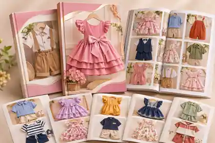
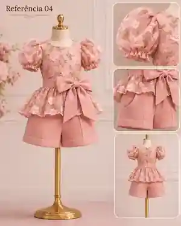
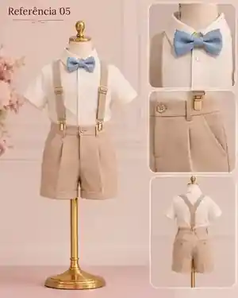
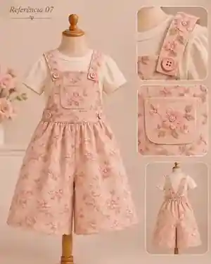
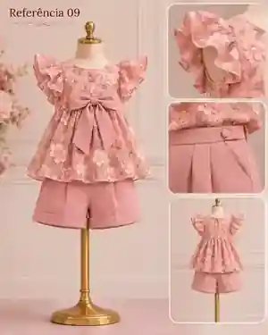

REFERÊNCIA 01
Vestido de festa com laço
Modelo pensado para servir como inspiração visual para costureiras.
Uma coleção digital de modelos variados, com cortes, detalhes e ideias para você costurar, se inspirar e criar peças incríveis para meninas e meninos.

Material digital • acesso pelo celular • duas opções de compra
Um material completo, prático e visual, com diversas referências de roupas infantis para você se inspirar, adaptar e produzir com mais criatividade e confiança.
Vestidos, conjuntos, macaquinhos, jardineiras e muito mais.
Babados, laços, mangas, golas, acabamentos e combinações.
Tenha as referências organizadas para consultar sempre que precisar.
Nesta reconstrução limpa, as imagens só serão inseridas depois de validadas uma a uma para garantir que o arquivo publicado seja exatamente o mesmo aprovado no chat.
Modelo pensado para servir como inspiração visual para costureiras.

Modelo pensado para servir como inspiração visual para costureiras.

Modelo pensado para servir como inspiração visual para costureiras.

Modelo pensado para servir como inspiração visual para costureiras.

Modelo pensado para servir como inspiração visual para costureiras.

Modelo pensado para servir como inspiração visual para costureiras.

Modelo pensado para servir como inspiração visual para costureiras.

Modelo pensado para servir como inspiração visual para costureiras.
Modelo pensado para servir como inspiração visual para costureiras.
Modelo pensado para servir como inspiração visual para costureiras.
Novas ideias e modelos para produzir.
Mais referências para renovar o catálogo.
Inspiração para evoluir na costura infantil.
Uma coleção prática e visual de referências.
Os bônus também terão imagens próprias, criadas e validadas separadamente.
Visual específico será adicionado após validação.
Visual específico será adicionado após validação.
Visual específico será adicionado após validação.
Visual específico será adicionado após validação.
Visual específico será adicionado após validação.
60 referências de modelos infantis
120 referências de modelos infantis
Você terá 7 dias para conhecer o material e solicitar reembolso dentro do prazo da garantia, conforme as condições da oferta final.
O segundo carrossel será preenchido somente com imagens de roupas prontas já validadas.
Uma cartilha digital com referências visuais de roupas infantis, de acordo com o plano escolhido.
Não. O material é de referências e inspirações visuais para costureiras.
Não. O conteúdo serve como referência tanto para quem já costura quanto para quem está desenvolvendo o olhar criativo.